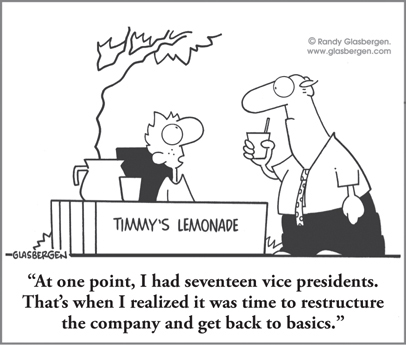

CHAPTER 17
Reorganization That Really Works: Energizing for Breakthrough Business Outcomes

CHAPTER HIGHLIGHTS
 Too often, reorganization focuses on cost reduction instead of growth-driven strategic reinvention, resulting in lackluster outcomes that can be avoided.
Too often, reorganization focuses on cost reduction instead of growth-driven strategic reinvention, resulting in lackluster outcomes that can be avoided.
 Reorganization is a Whole Brain process, yet all too frequently management implements it with a sole focus on ROI (return on investment) and execution (A and B quadrants), which can be counterproductive because it overlooks essential elements in the C and D quadrants (for example, culture, morale, and vision) that can make or break the success of the initiative.
Reorganization is a Whole Brain process, yet all too frequently management implements it with a sole focus on ROI (return on investment) and execution (A and B quadrants), which can be counterproductive because it overlooks essential elements in the C and D quadrants (for example, culture, morale, and vision) that can make or break the success of the initiative.
 Most organizations are sufficiently diverse to provide Whole Brain reorganization project leadership and Whole Brain implementation teams.
Most organizations are sufficiently diverse to provide Whole Brain reorganization project leadership and Whole Brain implementation teams.
 Reorganization is an opportunity for the whole organization to get energized by “going creative.”
Reorganization is an opportunity for the whole organization to get energized by “going creative.”
It was another classic M&A challenge: a big national bank was acquiring a regional bank. After the merger, the bank would require 900 fewer employees, and 40 branches would be closed—in short, the merger would create one community from a national bank of 38,000 people and a regional bank of 640 people. The challenges were tough. Was there a way to reorganize without the risk of losing a significant number of key staff members, and without the expense and morale problems associated with forced transfers and retrenchments—not to mention the possible loss of new and existing customers?
Whether you call it reorganization, realignment, restructuring, reinvention, or reengineering, most of these interventions are costly and painful—and, in the end, don’t work. This is freely admitted by the gurus who invented reengineering. My belief is that if the interventions had been properly conceptualized, managed, and carried out, the vast majority of these “re” efforts would have been wonderfully successful.
Ann McGee-Cooper and Duane Trammel,1 longtime HBDI practitioners and consultants, share the story of an engineering company that was facing the reorganization process with trepidation. The last effort had not been well received by the staff, and the leaders were concerned about running into the same challenges again. Ann and Duane’s first step was to look at the process from an HBDI thinking preference perspective. Since this was an engineering company, they weren’t surprised to find that its preferred process work flow as a team, as revealed in the HBDI Team Profile, started in the left-mode quadrants: B, then A, then D, then C.
Ann goes on to describe the “aha moment” that occurred when they engaged in an activity to elucidate the process from a thinking perspective. When they saw the HBDI Team Profile analysis, it showed that the team had a preferred thinking and process flow that went from B to A to D and then to C (organize, analyze, strategize, personalize; see Figure 17-1). Suddenly the challenge the company had faced with the reorganization in the past made sense!
FIGURE 17-1 Sample HBDI Team Profile process flow of preferences.
What I could see clearly and what the whole team could see once we stepped back to look at it is this: If you start with B and do a whole lot of detailed work and then do A, you’re so invested in that plan that when you get to D, there’s no way you’re going to scrap it and start over with a new paradigm. That means the person in the group with a strong D-quadrant preference was seen as not a team player and not on board because he was just waiting to get to the place where he could get out of the current paradigm that he thought wasn’t working and come at it with some creativity. Then when we got to C … well, at that point they were out of time, energy, and resources. They could suddenly see their resistance to a totally new approach from the D quadrant, much less working on C-quadrant concerns. By the time they got to the C quadrant, they were wiped out.
While technically, this company had a Whole Brain process, the reality was that its management tilt to the preferred B and A quadrants was taking over. As the process flows indicated, often no energy or time was spent on right-mode imaginative and people-oriented thinking, which are essential components—the company never really got to the C and D quadrants. With this in mind, they decided to design future meetings reversing the team’s default flow and starting with the overlooked quadrants: C to D to A and then B (personalize, strategize, analyze, organize). By reengineering their process, they were able to address the critical areas of people, communication, vision, and change more effectively, and they finally had a successful reorganization!
While we often call it reorganization, from a thinking perspective, the word reinvention is a better word for what should take place when major change occurs, and Whole Brain reinvention is the best descriptor. The process of invention is very clearly a double-dominant A/D-quadrant activity. As we saw in Chapter 7, data from the National Inventors Hall of Fame and the Lawrence Livermore National Laboratory demonstrate that the A/D 1-2-2-1 profile is the norm for the inventive mind. (For more information on the HBDI preference codes, see the HBDI Profile Interpretation Guide in the Appendix.) The A quadrant contributes logical, analytical, rational, quantitative, financial, and technical mental processes. When the imaginative, conceptual, holistic, experimental D quadrant is included, this synergistic combination makes all the difference in the thinking process. When you then add the necessary qualities of the B quadrant, with its specialization in form, sequence, chronology, and implementation, and the required qualities of the C quadrant, with its specialized preferences for interpersonal relationships, work, spirit, and communication expressiveness, we have a much more mentally complete process to support the outcomes we want from an effective reorganization, which so often requires a reinvention of the culture.
Don’t Overlook the Processes
Reinvention is part of reorganization, and too often these projects are painful because things get moved around without enough attention being paid to the process changes that need to take place as well. Reinvention of a business needs to include targeting the key processes involved in that business. This could mean the entire sales process or just the billing process. It could be as comprehensive a process as new product development or manufacturing automation, or as specific a process as the training of production line workers. A key factor in identifying a process for reinvention is that it must be critical to the success of the business, and it must also involve a change of state.
The best way to understand a state change is through an example. As the cofounder of a firm that mentors Silicon Valley technology start-ups, HBDI practitioner Paul Gustavson2 has been involved with more than 50 start-ups and many other fast-growth companies during his career. An organizational design expert, he uses this simple example of a bakery business with three critical state-change processes to explain what kind of processes are candidates for reinvention:
1. The first bakery process involves taking raw materials and mixing them together to create batter: change from raw ingredients to batter.
2. The second process involves shaping the batter into the form of a cake and baking it: change from batter to cake.
3. The third process involves icing and decorating the basic cake to create an attractive birthday or wedding cake: change from basic cake to decorated cake.
Each of these processes is discrete, and each causes a change of state: from raw materials to batter, from batter to cake, and from cake to decorated cake. The reinvention or reorganization challenge is to creatively change one, two, or all three of these bakery processes in order to reduce the cost, decrease the time required, improve the taste, enhance the appearance, or achieve all four simultaneously. Add to the results already described a reduction in the number of people required, and you now have a mini-example of reorganization at its simplest.
An operative word in this discussion is creatively. Without creativity, reorganization efforts are often “awkward examples of management muscle,” which may get good marks for intent, but very bad marks for results.
If you trace the motivating force behind the typical reorganization project, you will often find a management decision that was based solely on A- and B-quadrant thinking outcomes, as was the case with the engineering firm in the previous example. The objective of the reorganization intervention becomes so narrowly focused on cost reduction, for example, that creative possibilities are not even considered. The strong A/B thinking preferences become the basis for the decision-making style, which in turn becomes the basis for the operational style of dealing with the problem situation. These styles reinforce each other to such an extent that a fragile creative idea doesn’t have a chance. In addition to smothering creativity, the strong A/B management decision process also influences the makeup of the teams or project groups that are assigned to carry out the intervention. It is all too easy for A/B-mode managers to select A/B-mode teams to carry out their mandate. After all, they are selecting people in their own image to implement their perception of the needed action, when in fact a Whole Brain approach is what’s really needed.
Redesigning for Accelerated Performance: Appreciating and Applying Difference
In working with start-ups and fast-growth companies, Paul points out, the ideas for gaining greater competitive advantage are in people’s heads regardless of the industry, and we need to tap into their full capacity. Start-ups, whether they’re an entire organization or a new team, require an enormous amount of knowledge, and that means that we need people to learn quickly. Understanding their thinking and learning preferences is a critical step.
For example, when Hallmark Cards was pursuing an aggressive growth target, the IT division needed to redesign itself and generate new, more robust ideas to support this goal. Paul helped by using Whole Brain Thinking as the start-up tool for all of the IT design teams. The first step was using the HBDI profiles to increase awareness of the differences in people’s mental processing so that the division could develop an appreciation of that diversity and the benefits of having members who approach issues differently—especially when it comes to generating more robust ideas. By using this approach, the IT design teams came to have more tolerance, move to acceptance, and, as time passed, become better able to understand and use the learnings and applications of Whole Brain Thinking. The appreciation of differences allowed the team members to intentionally seek one another out, think in a more holistic way, and come up with better ideas and solutions for growth. From there, they hammered out the “how” of the implementation and the processes that would be required for ongoing learning, growth, and sustainability, increasing the number of robust ideas, as they had set out to do.
What was very significant about this Whole Brain application to the redesign process, Paul says, is that it was strategy-driven. Based on performance goals that IT outlined through its strategy, the design was created to achieve that performance. Whole Brain Thinking was built into an overall IT framework that was interconnected and linked to other systems.
In many situations—for example, when a major restructuring entails establishing project teams to review which roles (and people) should stay and which should go—these critical steps are overlooked. In the language of the Whole Brain Model, that type of experience will then typically play out as follows:
• Those with more A-quadrant thinking preferences may believe that the restructuring is a good idea because it can save money, but they may be concerned about the accuracy (veracity) of the economic analysis.
• Those with more B-quadrant thinking preferences may believe that the restructuring will make the organization more efficient, but they may also worry that the confusion and process changeover will create risk, chaos and inefficiencies in the short term.
• Those with more C-quadrant thinking preferences may be troubled about a potential loss of people’s livelihoods, but they can also think positively about how the new merged culture might provide new growth opportunities and benefits for associates.
• Those with more D-quadrant thinking preferences may be excited about the possibilities the new entity will provide, but they may worry about how well the vision of the future of the organization has been thought through.
While all these perspectives should be taken into account as the major decisions are being made, without the tools to work together and value the thinking of all four quadrants of the Whole Brain Model, there is no shared purpose and common ground. Instead, there is stress, conflict, insular decision making, and, ultimately, less-than-optimum outcomes. Most of that can be avoided!
One of Paul’s favorite statements is, “Organizations are perfectly designed for the results they achieve.” This is a devastatingly accurate prediction of the bottom-line results of each business organization. If success is to be the final result, then we must design the organization to be capable of producing that result. I would add to Paul’s quote that it is the leadership of the organization that determines the outcome. Organizations, taken as a whole, represent a composite whole brain. This means that the mental diversity is already in place to assemble the teams to implement a successful reinvention, redesign, or reengineering project. Too often, the missing element is Whole Brain management.
Mindful Merging: Restructuring That Doesn’t Fall Apart
So what happened with the bank merger I told you about at the beginning of this chapter? Knowing the history of how mergers and restructurings typically happen—and often fail to deliver—the banks recognized that they had to find a better approach. Working with HBDI practitioners Robert Webber, Colin Pidd, and David Clancy,3 they realized that integrating the Whole Brain Model and Whole Brain Thinking at the organizational level would provide a common language and a more holistic way of looking at all of the strategic initiatives and planning.
A Whole Brain project team was assembled to ensure that the appropriate decisions would be made and that a strong culture and community would emerge from the process.
In addition, to complement the more A/B-oriented thinking of the bank’s executive team, a “Merger Management Team” (MMT) was also established. This team had an entirely different profile, with stronger preferences in the C and D quadrants. The MMT members required training in the business aspects of the merger, but their preferences for conceptual, “big-picture” thinking allowed them to enthusiastically embrace the challenge of developing an innovative approach to the merger. They were also very committed to preserving the jobs of their colleagues and fostering a strong sense of organizational community.
The end result was that the two banks successfully merged. They closed 40 co-located branches, but there were no retrenchments (no one was paid to go) and no forced transfers, and there was 86 percent support for the industrial relations agreement. In addition, staff turnover was reduced from 14 percent to 6 percent. A trade-off was that the management of the integration took longer, as natural attrition was the strategy for avoiding forced retrenchments. A bonus for customers was increased opening hours: the staff members agreed that, to make the merger successful, and taking into consideration the commitment to retain jobs, they would open key branches on Saturday.
To top it all off, as a result of all these benefits, the $10 million that had been set aside for redundancies was no longer needed! (For more complete details on this case study, please visit www.herrmannsolutions.com.)4
Reorganizations and reinventions will continue to dominate the business landscape. Lessons learned for successful outcomes include:
Step 1. Install a Whole Brain management team in the leadership roles of a reorganization project.
Step 2. Create Whole Brain implementation teams.
Step 3. Apply appropriate creative processes in all the activities of the leadership and implementation teams to bring needed innovation to the inevitable process changes and other issues that will emerge.
To optimize reorganization interventions and help guarantee their success, organizations need to balance the typical A/B management tendencies with a deliberate focus on and injection of more C/D thinking. By so doing, not only will they successfully reorganize, but they will reinvent and reenergize the entire business.
 Reorganization interventions frequently and unnecessarily fail to produce the intended results.
Reorganization interventions frequently and unnecessarily fail to produce the intended results.
 Reorganization projects are habitually led by A/B management that is incapable of conceptualizing the intervention in Whole Brain terms.
Reorganization projects are habitually led by A/B management that is incapable of conceptualizing the intervention in Whole Brain terms.
 Organizations are perfectly designed for the results they achieve.
Organizations are perfectly designed for the results they achieve.
 A Whole Brain approach, including the involvement of a Whole Brain reorganization team, can help companies overcome the common pitfalls of complex mergers and restructuring initiatives.
A Whole Brain approach, including the involvement of a Whole Brain reorganization team, can help companies overcome the common pitfalls of complex mergers and restructuring initiatives.
 Economic crises require tough, savvy, future-oriented management decisions. A Whole Brain approach provides the foundation to make sure that such decisions can happen.
Economic crises require tough, savvy, future-oriented management decisions. A Whole Brain approach provides the foundation to make sure that such decisions can happen.